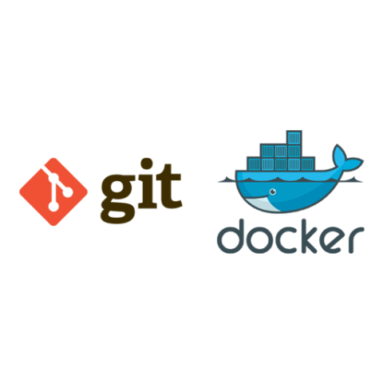
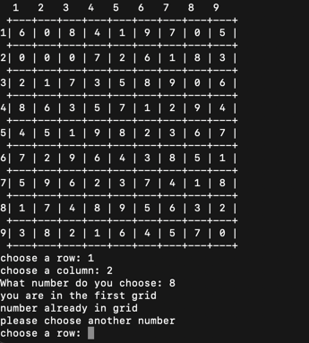
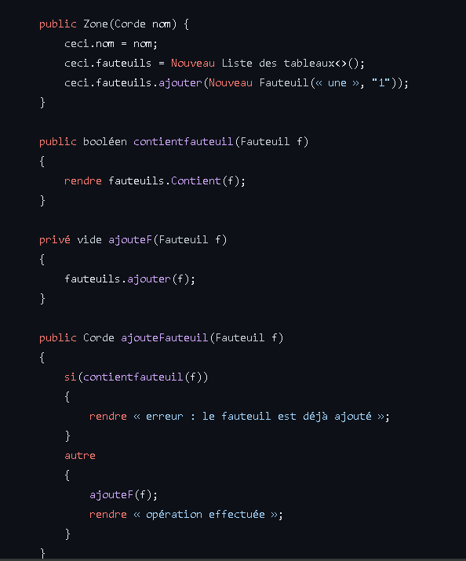
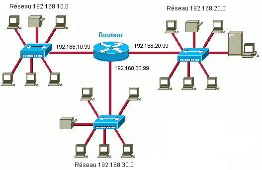
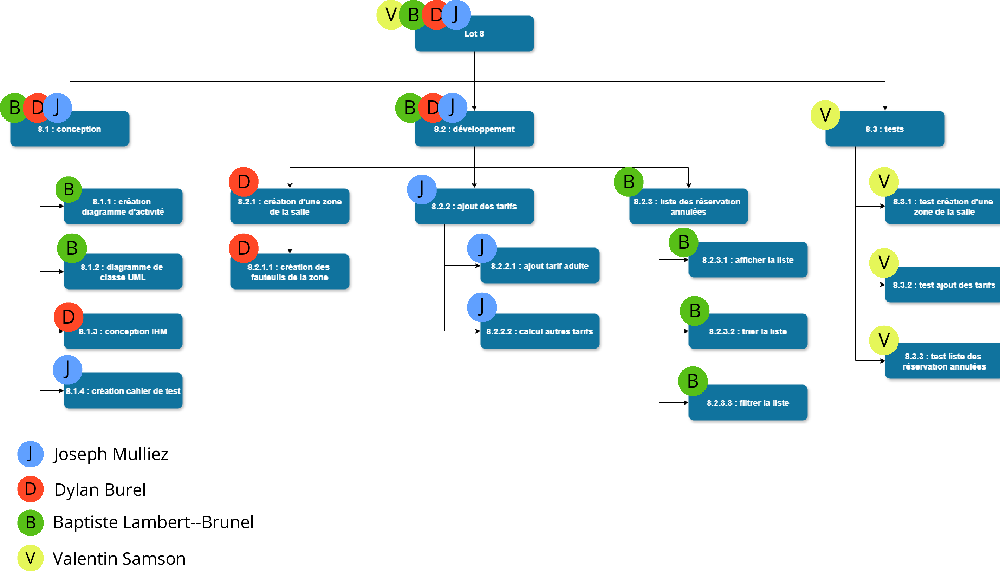

Semestre 1
Projet 1 : Installation d'un poste pour le développement

Description :
Ce projet, intitulée "Installation d'un Poste de Développement", offre une plongée détaillée dans l'univers complexe de la configuration d'un environnement de développement informatique. Ce projet vise à nous fournir les compétences essentielles pour installer et configurer efficacement un poste de travail dédié au développement logiciel.
Au-delà de la simple installation d'un éditeur de texte et d'un compilateur, ce projet explore les divers domaines du développement, notamment la programmation système, le développement d'applications pour diverses plateformes (bureau, mobile, web), la gestion de bases de données, et bien plus encore. Nous avons ainsi été exposés à l'étendue de nos futures responsabilités en tant que développeurs.
L'un des points forts de ce projet réside dans son approche pratique. Nous avons appris à installer et configurer non seulement les outils de développement, mais aussi les logiciels de documentation, les systèmes de gestion de code source et les bibliothèques nécessaires à notre projet. De plus, nous avons été sensibilisés à l'importance de maintenir un environnement de travail propre, compatible avec le travail en équipe, et facilement reproductible.
En mettant l'accent sur l'efficacité et la simplicité, cette SAÉ propose des techniques pour éviter les pièges courants rencontrés lors de l'installation d'un poste de développement, tels que les incompatibilités entre les versions d'outils ou les conflits entre les différentes composantes logicielles. Enfin, elle encourage les étudiants à adopter une approche proactive dans la gestion de leur environnement de travail, afin de maximiser leur productivité et de minimiser les perturbations.
Ce projet constitue ainsi une étape cruciale dans la formation des futurs professionnels du développement informatique, en les dotant des compétences nécessaires pour aborder avec succès les défis de l'installation et de la configuration d'un poste de développement.
Compétences travaillées durant ce projet :
- Compétence 1 : Réaliser un développement d'applications
- Compétence 2 : Optimiser des applications informatiques
- Compétence 3 : Aministrer des systemes d'information communicants
- Compétence 5 : Conduire un projet
- Compétence 6 : Travailler dans une équipe informatique
📖 Enoncé du projet
Projet 2 : Création d'une base de données pour l'IUT
Description :
Ce projet se focalise sur la modélisation d'une partie du Programme National (PN) du BUT informatique en vue de créer le schéma de la base de données (BDD) associée. Elle commence par une analyse du contenu du PN.
Mon groupe et moi-même avons donc due modéliser, en identifiant les entités, les relations et les attributs pertinents pour représenter de manière précise le Programme National. L'objectif est de développer nos compétences en conception de bases de données, en mettant l'accent sur la cohérence et la complétude du schéma proposé.
Cette activité nous a permis de mettre en pratique nos connaissances théoriques sur la modélisation des données dans un contexte concret, tout en développant nos capacité à analyser les besoins d'un système informatique et à traduire ces besoins en structures de données efficaces et bien organisées.
Compétences travaillées durant ce projet :
- Compétence 1 : Gérer des données de l'information
- Compétence 2 : Conduire un projet
- Compétence 3 : Travailler des une équipe informatique
📖 diagramme des classes conçue pour ce projet
Projet 3 : Implémentation d’un besoin client

Description :
Mon groupe pour ce projet avons été confrontés à une mission stimulante : concevoir et réaliser un programme en langage C permettant à un utilisateur de jouer au jeu du Sudoku.
Le Sudoku, un jeu de logique très populaire, consiste à remplir une grille carrée de taille variable avec des chiffres de 1 au nombre de d'éléments d'une ligne ( exemple : si la grille est une grille de 10X10, les valeurs possibles peuvent aller de 1 à 10), de telle sorte que chaque ligne, chaque colonne et chaque bloc contienne tous les
chiffres sans répétition.
Nous avons donc due suivreun processus en deux parties : la conception et la réalisation. Dans la première phase, nousa avons produit une maquette, l'algorithme principal du jeu en pseudo-code, ainsi qu'une liste détaillée des procédures et fonctions nécessaires à la réalisation future du loiciel. La seconde phase implique la création d'un cahier de tests, du code source, d'une trace d'exécution des tests et d'une documentation complète utilisant Doxygen.
Un planning strict de remise des travaux a été établi, allant de la maquette initiale à la documentation finale, avec des dates butoirs à respecter. Cela nous a permit de développer non seulement nos compétences en programmation en langage C, mais aussi notre capacité à concevoir et à réaliser des solutions logicielles répondant à des besoins concrets et à respecter des échéances.
Compétences travaillées durant ce projet :
- Compétence 1 : Réaliser un développement d'applications
- Compétence 2 : Optimiser des applications informatiques
- Compétence 3 : Conduire un projet
- Compétence 4 : Travailler dans une équipe informatique
📖 Espace Github pour ce projet
Projet 4 : Interview d'entreprise
Description :
Durant ce projet, nous devions prendre contact avec une entreprise de notre choix afin de réaliser une interview du gérant de celle-ci. Cette interview avait pour objectif de récolter les explications du ou des gérants de l'entreprise de pourquoi il(s) a/ont fait appel à une entreprise spécialisée pour la création de leur site web.
Avec ce projet d'interview en entreprise, mon collègue et moi-même avons pris pris contact avec plusieurs entreprises. Malgrès de très nombreux refus d'interview par manque de temps ou de non-compatibilités avec les critères qui nous avait été transmis, nous avons finalement réussi à obtenir une interview du gérant de l'entreprise Lannionnaise " Armor Cycles"
Cette interview nous a fait apercevoir ce qu'est la discussion en entreprise et comment prendre contact avec des entreprises.
Compétences travaillées durant ce projet :
- Compétence 1 : Conduire un projet
- Compétence 2 : Travailler dans une équipe informatique
📖 PDF du rapport d'interview
Semestre 2
Projet 1 : Developpement d'une application

Description :
Ce projet consiste à produire une application fonctionnel en groupe de 4 étudiants. Cette application est pour une salle de spectacles fictive qui l'utilisera pour la gestion de la salle, ainsi que pour la gestion des réservations.
Nous avions comme matières premières, un diagramme UML de tout ce qui était à concevoir, ainsi qu'une explication de toutes les actions possibles que le client avait spécifiées et voulues dans son logiciel de gestion.
Pour ce projet, nous avons du concevoir l'interface homme/machine, la partie back_end de l'application ( c'est à dire toute la partie qui va faire fonctionner le logiciel/aplliaction ) et enfin, nous avons due concevoir toute la base de données nécessaire au bon fonctionnement de l'application.
Compétences travaillées durant ce projet :
- Compétence 1 : Réaliser un développement d'applications
- Compétence 2 : Administrer des systèmes informatique communicants
- Compétence 3 : Gérer des données de l'information
- Compétence 4 : Conduire un projet
- Compétence 5 : Travailler dans une équie informatique.
📖 Espace Github pour ce projet
Projet 2 : Installation d'un service réseau

Description :
ous avons travaillé avec Apache comme serveur web, MySQL pour la gestion de base de données, avec PHP ainsi que HTML5 et CSS comme langage de programmation.
Ce projet nous a permis de pratiquer l'installation et la configuration de services réseau essentiels, notamment sous Linux, et de comprendre comment ces technologies interagissent pour le développement web.
Compétences travaillées durant ce projet :
- Compétence 1 : Réaliser un developpement d'applications
- Compétence 2 : Optimiser des applications informatiques
- Compétence 3 : Conduire un projet
- Compétence 4 : Travailler dans une équipe informatique
📖 Rapport du projet
Projet 3 : Exploitation d'une base de données
Description :
Ce projet consistait à concevoir et gérer une base de données et par la suite, utiliser des données qui nous a été fournies pour faire des statistiques.
En premier lieu, nous devions, mon collègue et moi-même, concevoir une base de données complexe à partir d'un diagramme de classes UML avec des informations précises de commment les différentes classes sont reliées entre elles et comment elles "communiquent" entre elles.
Pour cela, nous avons utiliser SqlWorkbench pour concevoir les tables nécessaires à la base de données.
Dans un second temps, nos professeurs nous ont donné plusieurs fichiers au format "CSV". Ces fichiers contenaient toutes les données dont nous avions besoin pour peupler ( remplir ) les tables et donc compléter la base de données.
Pour cela, nous avons utiliser les commandes SQL d'exportations telles que "WBimport".
Et pour finir, nous avons effectuer des statistiques avec les données que nous avions exporter des fichiers CSV vers la base de données.
Photo diagramme UML
photo SqlWorkbench
Compétences travaillées durant ce projet :
- Compétence 1 : Gérer des données de l'information
- Compétence 2 : Conduire un projet
- Compétence 3 : Travailler dans une équipe informatique
Projet 4 : gestion d'un projet

Description :
Ce projet est en lien avec le projet n°1. Ce projet est en fait, la partie de préparation et de planification du développement de l'application demandé dans le projet n°1.
En effet, nous avions, comme matière première pour ce projet, le descriptif de ce que le client demandait pour son application.
Avec ce descriptif, nous avons réparti, de manière prévisionnel, toutes les fonctionnalités et éléments à implémenter entre les 4 personnes de notre groupe.
Nous avons donc rédigé une matrice RACI, un organigramme des tâches et bien evidement, une estimation des charges du projet.
Compétences travaillées durant ce projet :
- Compétence 1 : Conduire un projet
- Compétence 2 : Travailler deans une équipe informatique
Projet 5 : Organisation d'un travail d'équipe

Description :
Le But de ce projet est de créer et organiser un évènement de team-building pour une entreprise de notre choix.
Comme tous nos projets de l'année, nous étions en groupe.
Avec mes collègues, nous avons choisi l'entreprise "Anthénéa". Cette entreprise conçoit des maisons flottantes sur mesure.
Comme je l'ai dit, le but était d'organiser un événèment pour l'équipe de l'entreprise. Nous avons donc eu l'idée d'organiser un événèment sportif dans ploumanac'h, lieu emblématique des côtes-d'Armor.
Pour faire cet évènement, nous avions un budget de 5000 euros.
Pour la communication de cet évènement, nous avons fait circuler des flyers, créés par nos soins, qui expliquent le dérouelement de l'activité sportive. Nous avons aussi réalisé un teaser d'une minute, tourné et monté par nous-même.
Compétences travaillées durant ce projet :
- Compétence 1 : Conduire un projet
- Compétence 2 : Travailler dans une équipe informatique